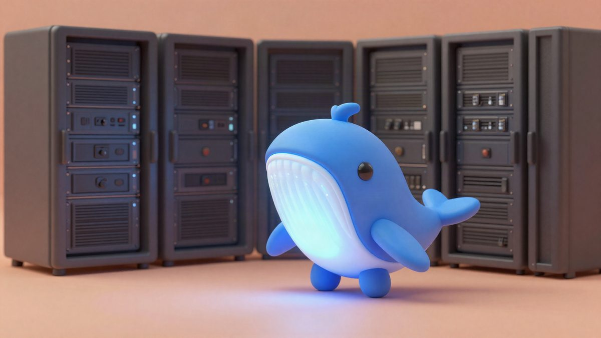

DeepSeek je ograničio besplatne razgovore, korisnici su zasuli App Store jednozvjezdicama

DeepSeek je od 15. studenoga zbog manjka računalne snage uveo ograničenja u besplatnoj aplikaciji i na webu. Razgovori neaktivni 7 dana više se ne mogu nastaviti, a pojedinačni unos smanjen je na oko 40.000 znakova. U kineskom App Storeu pojavile su se i negativne i pozitivne ocjene.
DeepSeek je od 15. studenoga uveo ograničenja za besplatnu aplikaciju i web verziju, a kao razlog navodi nedostatak računalne snage. Dugi razgovori koji su 7 dana neaktivni više se ne mogu nastaviti. Treba započeti novi razgovor ili izvesti povijest i koristiti je u drugoj aplikaciji.
Pojedinačni unos smanjen je na oko 40.000 znakova, a postoji i ograničenje količine razgovora. Dio ljudi kaže da su poruku o dosegnutoj kvoti dobili nakon samo dva sata korištenja. Ograničenja se odnose samo na besplatnu aplikaciju i web, a plaćeni API nije promijenjen.
Zašto stari razgovori opterećuju servere
Model nema dugoročnu memoriju, pa pri svakoj poruci iznova čita cijeli razgovor. Dok se razgovor aktivno vodi, to se rješava predmemorijom i trošak je nizak. Nakon nekoliko sati do nekoliko dana predmemorija se briše. Autor izvornog članka izračunao je da buđenje razgovora od 200.000 znakova opterećuje servere kao 15 do 40 i više normalnih poruka, čak i ako netko napiše samo "bok".
Tko dnevno postavi desetak pitanja, vjerojatno neće primijetiti promjenu. Teže je onima koji u aplikaciji čuvaju medicinske podatke, literaturu za ispite, poslovne predloške, romane od više stotina tisuća znakova ili dugotrajne razgovore s likovima.
Podijeljene ocjene
U App Storeu i na društvenim mrežama pojavila su se mnoga negativna mišljenja, ali i podrška. Prema podacima koje je autor prikupio za kineski iOS App Store, u 4 dana nakon uvođenja ograničenja dodano je 1.042 ocjena s jednom zvjezdicom i 1.136 s pet zvjezdica. Jedan korisnik navodno je zbog ograničenja nazvao broj 12345, službenu liniju za građane, nakon čega su policajci došli provjeriti stanje.
Nedostaje računalna snaga, ne novac
Mediji pišu da je DeepSeek ove godine prikupio dvije velike runde financiranja. U lipnju je to bilo oko 50 milijardi juana (oko 6,5 milijardi eura), od čega je osnivač Liang Wenfeng uložio oko 20 milijardi juana, a u listopadu još oko 105,5 milijardi juana (oko 13,7 milijardi eura). Računalnu snagu međutim nije moguće jednostavno kupiti zbog izvoznih ograničenja na Nvidijine vrhunske chipove.
Bloomberg je u rujnu pisao da DeepSeek u Unutarnjoj Mongoliji planira postaviti najmanje 160.000 Huaweijevih Ascend 950DT chipova. Taj data centar mogao bi djelomično proraditi tek krajem 2027. ili početkom 2028. DeepSeek je već ranije imao problema s kapacitetom. Pauzirao je dopunu API računa, uveo jeftinije cijene u satima manjeg opterećenja, a od listopada je imao 10 prekida rada.
Zbog toga se pretplata ne čini jednostavnim rješenjem. OpenAI-jev Sam Altman je u siječnju 2025. izjavio da ChatGPT Pro, koji košta 200 dolara (oko 175 eura) mjesečno, stvara gubitak. Anthropic je u srpnju 2025. za Claude uveo tjedna ograničenja jer je jedan korisnik na tom paketu potrošio 11 milijardi tokena, što bi po API cijenama iznosilo oko 35.000 dolara (oko 30.000 eura).
Tko ne želi izgubiti povijest razgovora, može je izvesti i uvesti u DeepSeek Harness ili u chat-demo, koji je DeepSeek 13. studenoga objavio kao open source, uz vlastiti API ključ. Plaća se prema potrošnji.
Izvor: MyDrivers (快科技)
Povezani članci
 ChatGPT sada transkribira govor u stvarnom vremenu: Live Dictation bez ograničenja od 10 minuta19. studenoga 2026.
ChatGPT sada transkribira govor u stvarnom vremenu: Live Dictation bez ograničenja od 10 minuta19. studenoga 2026.- Claude sada otvara aplikacije poput Asane, Cance i Vercela izravno u chatu11. studenoga 2026.
 Kina: na teoriji za motor koristio AI naočale i pametni prsten, uređaj pogriješio sve odgovore s višestrukim izborom8. studenoga 2026.
Kina: na teoriji za motor koristio AI naočale i pametni prsten, uređaj pogriješio sve odgovore s višestrukim izborom8. studenoga 2026.